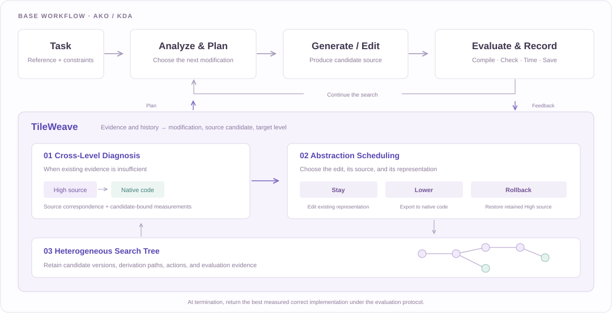

Cross-Level Diagnosis
Connect High-level calls to generated native code, then associate measurements with the candidate and executed kernel or call group.
What does the evidence support changing?
Give coding agents the freedom to choose what to change,
where to change it, and which candidate to build on.
Lower exports a candidate. Rollback restores a retained High source.
Programming abstractions have traditionally been designed for humans. As coding agents take on more programming tasks, the best abstraction may depend on the stage of their search: high-level DSLs simplify exploration, while native code exposes finer control for performance tuning.
TileWeave is a unified, pluggable interface for programming across abstraction levels. It combines Cross-Level Diagnosis, Abstraction Scheduling, and a Heterogeneous Search Tree to connect execution feedback with editable controls and retain useful search branches.
We integrate TileWeave with AKO and KDA and evaluate both on 50 end-to-end KernelBench Level 3 workloads, across two accelerator platforms and two language models. The results show improvements across all four accelerator–model configurations.
AKO+TileWeave over workload references
Compared with AKO-Random by overall mean
The same interface, a second base workflow
The base workflow continues to generate, evaluate, and refine kernels. TileWeave helps the agent choose the next modification, its source candidate, and its abstraction level.

Connect High-level calls to generated native code, then associate measurements with the candidate and executed kernel or call group.
What does the evidence support changing?
Compare the controls available at each level and select a source candidate, action, and target level for a testable modification.
Where should the next edit happen?
Retain candidates, derivation paths, and evaluation records across levels so useful alternatives can be revisited.
Which implementation should the agent resume?
Select an action to see how candidate history is used.
Edit a selected source at its current level. Stay can also resume a retained Low branch; it does not require continuing from the most recent candidate.
The agent makes these choices from evidence and history. The paper’s scheduling pseudocode describes agent decisions; it is not a separately trained routing model.
50 workloads · 4 accelerator–model configurations · 5 independent agent runs per pair.
Every run shares a 120-minute total search budget and the prescribed platform evaluator.
Table 1 · Mean endpoint speedup (×); overall SD is across five independent agent runs
| Method | Ascend / Astra | AMD / Astra | Ascend / DS | AMD / DS | Overall ± SD | Correct |
|---|---|---|---|---|---|---|
| AKO-High | 2.402 | 5.013 | 1.046 | 3.792 | 3.063 ± 0.082 | 188 / 200 |
| AKO-Low | 3.032 | 3.153 | 1.981 | 2.915 | 2.770 ± 0.085 | 192 / 200 |
| AKO-Fixed | 2.982 | 5.055 | 2.293 | 4.632 | 3.741 ± 0.113 | 188 / 200 |
| AKO-Unrestricted | 2.444 | 4.696 | 1.856 | 3.942 | 3.235 ± 0.123 | 192 / 200 |
| AKO-Random | 3.750 | 5.487 | 1.962 | 3.792 | 3.748 ± 0.167 | 191 / 200 |
| KDA | 2.429 | 3.068 | 2.007 | 2.956 | 2.615 ± 0.044 | 190 / 200 |
| AKO+TileWeave | 4.576 | 6.722 | 2.778 | 5.268 | 4.836 ± 0.221 | 195 / 200 |
| KDA+TileWeave | 4.437 | 6.339 | 2.371 | 4.553 | 4.425 ± 0.119 | 195 / 200 |
Correctness uses majority success (at least 3 of 5 runs). Mean endpoint speedups retain failed-run zeros. The interactive chart below provides each configuration’s uncertainty intervals.
Arithmetic-mean speedup over the matching workload reference
Overall weights the four configurations equally. Failures contribute zero.
| Method | Mean ± SD | Median | 95% bootstrap CI | Majority correct |
|---|
Measured re-evaluation of the selected implementations · same aggregation and reference convention
Yes. Using final-verification results for every method preserves the principal overall mean-performance comparisons. Best-reported search endpoints remain the paper’s reporting convention; the measurements below provide a separate sensitivity analysis.
| Comparison | Best-reported gain | Final-verify gain | Best W / T / L | Final W / T / L |
|---|---|---|---|---|
| AKO+TileWeave vs AKO-Random | 29.04% | 29.42% | 158 / 5 / 37 | 152 / 9 / 39 |
| AKO+TileWeave vs AKO-Fixed | 29.29% | 29.39% | 144 / 6 / 50 | 135 / 17 / 48 |
| KDA+TileWeave vs KDA | 69.22% | 69.51% | 159 / 3 / 38 | 159 / 4 / 37 |
Individual paired wins, ties, and losses can change even though the principal mean-performance conclusions remain stable. Across all 55 method–configuration summaries, the largest absolute mean-speedup change is 0.679%. Existing confidence intervals describe the original search endpoints only.
| Method | Best reported | Final verification | Mean change | Runs within ±3% latency |
|---|---|---|---|---|
| AKO+TileWeave | 4.836× | 4.823× | -0.266% | 90.83% |
| AKO-Fixed | 3.740× | 3.728× | -0.342% | 95.40% |
| AKO-High | 3.063× | 3.058× | -0.170% | 95.18% |
| AKO-Low | 2.770× | 2.768× | -0.090% | 95.47% |
| AKO-Unrestricted | 3.234× | 3.219× | -0.474% | 94.64% |
| KDA | 2.615× | 2.605× | -0.371% | 91.28% |
| KDA+TileWeave | 4.425× | 4.416× | -0.198% | 95.14% |
| AKO-Random | 3.748× | 3.727× | -0.555% | 93.47% |
| w/o Diagnosis | 4.229× | 4.215× | -0.316% | 95.21% |
| w/o Scheduling | 3.854× | 3.845× | -0.245% | 96.06% |
| w/o Tree | 4.141× | 4.130× | -0.274% | 93.41% |
Mean best-so-far speedup at each reporting budget · Figure 6
Post-step curves use the supplied reporting coordinates. A run scores zero before first correctness and carries its last value forward after termination. Download coordinates ↓
High reaches the first correct implementation in 6.81 minutes on average, compared with 10.74 minutes for TileWeave. TileWeave’s advantage appears during continued refinement.
Removing Diagnosis, Scheduling, or the Search Tree reduces mean endpoint speedup by 12.6%, 20.3%, and 14.4%, respectively. These ablation losses are not additive.
| Workload | Best reported | Final verification | Correct runs | Majority success |
|---|
TileWeave’s first High-level candidate fails compilation. Iteration 2 repairs it before any Lower or Rollback action.
The High-stage trace is the High prefix of the Fixed experiment. Its final case speedup is 1.815×; TileWeave’s is 2.123×. These are single-case results, separate from Table 1 aggregates.
Retained High candidates reopen structural choices. Later Low candidates can reuse compatible native code from earlier branches.
Unchanged repeat, iter-58: 3.880 ms. The same source and configuration passed correctness again, with a 1.28% latency difference from iter-53. The later 4.138 ms verification also passed. Read the measurement note ↓
Figure 4 uses the case’s own 44.954 ms reference (11.734× best; 10.864× verification). Figure 5 uses the same 42.969 ms reference as its three baselines (11.215× best). The approximately 8% candidate remeasurement difference is independent of this normalization. Read the clarification ↗
Matched interventions start from the same candidate state with the same 10-evaluation local budget: 23/25 High checkpoints favor Lower; 19/25 Low checkpoints favor Rollback. This is evidence about the sampled switching states and tested alternatives.
Supplementary explanations of the method, measurement contract, and scope of the evidence.
Download this guideFigure 4 reports the MinGPT case using its own reference latency of 44.954 ms. Figure 5 uses a common reference of 42.969 ms shared with its three baseline trajectories, so those curves are compared on the same normalization basis. The reference convention is therefore not fully uniform across the two figures: their speedup numbers should be interpreted with their respective denominators.
The selected iter-53 source took 3.831 ms during search, 3.880 ms in an unchanged repeat at iter-58, and 4.138 ms in final verification. The retained note records identical source and configuration and successful correctness checks in all three evaluations. The repeat differs by 1.28%; the approximately 8% best-to-final increase is a candidate remeasurement difference, independent of reference normalization. It is consistent with between-evaluation variability and does not reflect a source change during restoration.
Final verification still gives a 10.864× case speedup. The new aggregate sensitivity analysis also preserves the principal overall mean-performance conclusions when every method uses final-verification values. The Figure 4 case is recorded separately: its mapping to a main-cohort run has not been established, so it is not included in that aggregate. Original figures and numerical records are unchanged. Case alignment ↓ · Figure conventions ↗
The main tables use best reported: the fixed matching reference latency divided by the lowest eligible median latency from a correct formal search evaluation. Each median uses five timed calls after three warmups. Compile failures, incorrect candidates, diagnostic-only measurements, and protocol-invalid evaluations are excluded; a run with no eligible correct candidate scores zero.
Final verification re-evaluates the restored selected source and is recorded separately. Its latency does not replace the search endpoint. A best-reported speedup therefore describes the search record and need not equal the speedup measured in a later verification. Endpoint definition ↗
Five independent agent runs are separate from the five timed forward calls within one evaluation. Correctness uses shared standard-normal floating inputs, ten trials for each seed base 42, 43, and 50000, and atol = rtol = 0.001. Timing uses input seed 42. Agent seed labels are 101, 211, 307, 401, and 503.
A workload–configuration pair meets majority correctness if at least three of five runs succeed. Endpoint scores are averaged over all five runs, including failed-run zeros; a pair with fewer than three successes can still contribute a positive endpoint mean.
The overall mean equally weights the four configurations. SD is across the five aggregate repeat means (ddof = 1). The 95% confidence intervals use 20,000 paired workload bootstrap draws, retaining each workload’s configurations and repeats together. They describe uncertainty conditional on the supplied endpoint records. Resampling settings ↗
Both use the same platform-specific boundary for reference and candidate. AMD uses a synchronized HIP-event interval around the forward invocation. Ascend uses the msprof device-task envelope, from the first attributed task start to the last attributed task completion.
Both include intervening gaps and count overlap once. Ascend excludes host work outside that device interval. These boundaries differ, so normalized speedups should not be read as a direct comparison of absolute hardware latency or identical host request latency. Per-task duration sums are diagnostic only. Timing protocol ↗
No. Rollback restores a retained higher-level source and continues editing there, while preserving the existing Low branch. Lower exports a supported native representation from a selected High candidate. Stay edits a selected source in its existing representation and can resume a retained Low branch.
The tree gives each snapshot one derivation parent. Cross-branch code reuse is recorded in iteration history and source records. A native candidate’s High parent records its origin; after native edits, that lineage alone does not establish an exact source correspondence.
Tools connect calls, generated source, argument bindings, and available measurements for a particular candidate. The coding agent interprets those observations, judges whether evidence supports a concrete modification, and chooses the edit, candidate, and level. The functions in Algorithm 1 describe that agent process; explicit enumeration or numerical ranking of all plans is not required.
A kernel or call-group timing measures that whole region. For example, Figure 3’s 2.786 ms is the whole attention call, not the reduction or barrier alone. Code inspection can motivate an optimization hypothesis, but attributing a measured cost to an individual operation requires additional evidence. Ambiguous measurement-to-code matches remain unassociated.
The High-only series in Figures 1 and 5 is the complete High-stage AKO invocation also used as Fixed’s first stage. It terminated autonomously under AKO’s own stopping rules at approximately 14.72 minutes; this was its observed completion time, not an experimenter-imposed cutoff. During that invocation, the agent worked exclusively in TileLang and was not instructed to reserve work for Low.
Only after High completed did the controller export its selected implementation and start a fresh Low-stage session without the High conversation. The High-only and High-to-Low curves therefore share one completed High run rather than independent High samples. Under the same High-stage configuration and stopping rules, that invocation is operationally equivalent to standalone High-only AKO.
The 1.264× endpoint characterizes this search trajectory, not a limit of TileLang’s expressiveness. With different history and guidance, TileWeave’s High iter-17 reaches approximately 8.345× under the common reporting reference. Autonomous stopping establishes completion under a workflow policy, not exhaustion of all useful High-level optimizations. High-only search and autonomous termination ↓
Fixed runs independent High and Low agent conversations, separated by a validated export; the Low agent inherits neither the High conversation nor its history. Unrestricted retains AKO’s existing representation choices under the platform contract.
Random samples legal cross-level actions using transition frequencies estimated from this evaluation cohort. After a sampled Rollback, the agent still chooses a retained correct High source. It is a post-hoc frequency control, not a fully random candidate selector or an out-of-sample routing policy.
w/o Scheduling replaces scheduling with a fixed High-to-Low progression inside the component ablation; it should not be assumed identical in all other respects to the independent-agent Fixed baseline. Ablation effects interact and should not be added together.
In the next three evaluations, 64.4% of eligible Rollback windows improve the incumbent by more than 3%. Extending the window until the next Rollback or termination raises the productive fraction to 79.8%, with a 50.07% median gain. This extended result includes later edits and is a descriptive association, not an isolated causal effect of the Rollback itself.
The matched interventions provide a more controlled comparison: from the same state and with the same 10-evaluation budget, Rollback beats Stay at 19/25 sampled Low checkpoints. These results support the tested choices at those checkpoints, not a universal guarantee that Rollback is always preferable.
The release includes workflow and backend source, evaluator support, 11,000 endpoint records across 11 methods or variants, final-verification values, timing samples, resampling settings, candidate snapshots, and case traces. KDA’s upstream resources remain external; the package includes local adapters and setup instructions. Its dependency metadata distinguishes the supplied reproduction configuration from historical experiment provenance. KDA integration details ↗
The named MLP and MinGPT cases include candidate and output archives. The 500-episode Rollback table supplies event ordering, but lacks original run IDs and per-episode candidate-source or raw-log paths. Likewise, main-cohort publication run IDs are not mapped to historical run directories. These materials support different levels of inspection; the event table alone is not a complete source archive for all 500 episodes. Coverage of retained records ↗
The evidence covers two editable levels, 50 KernelBench Level 3 workloads, two accelerator platforms, and two models. Generalization to additional levels, dynamic shapes, communication-heavy workloads, multi-device execution, or future compiler versions remains to be evaluated.
The six bundles cover the paper’s data-availability references. Each includes its original documentation and supporting records. View the paper-to-file index ↗
Correctness, platform timing, search budgets, endpoint definitions, and case protocols.
§4.1 · Measurement contract 01 ZIP ↓Version tables, dated package inspection, and records of the environments used by the cases.
p. 10 · §4.1 02 ZIP ↓11,000 seed-level endpoints, measured final-verification results, timing samples, paired effects, and bootstrap settings.
p. 11 · Tables 1–4 03 ZIP ↓42 evaluated snapshots, one launch-failure record, outputs, and 380 timing values.
p. 13 · §4.3 04 ZIP ↓60 MinGPT evaluations, High-only stopping notes, 500 Rollback event sequences, and figure data.
p. 16 · §4.5 · Figures 1, 3–7 05 ZIP ↓Workflow interfaces, Ascend and ROCm backends, native runtime, references, and KDA adapters.
p. 18 · Data availability| Platform | High representation | Native toolchain |
|---|---|---|
| Huawei Ascend 910B3 | TileLang-Ascend 0.1.4 (imported source) | Ascend C / CANN 9.0.0 |
| AMD Radeon AI PRO R9700 | TileLang 0.1.14 | ROCm SDK 7.14.1; HIP 7.14.60850 |
An installed Ascend wheel reports 0.1.4+ubuntu.20.4.cann900; its metadata is distinct from the imported source module. The system-default CANN version is not the case’s selected toolchain. Read the version evidence ↗
The supplied manuscript is anonymous. Update author and publication fields when a public bibliographic record is available.
@misc{tileweave,
title = {TileWeave: Programming Across Abstraction
Levels for Coding Agents on Accelerator Kernels},
author = {{Anonymous Authors}},
note = {Anonymous manuscript},
url = {https://tileweave.github.io/}
}